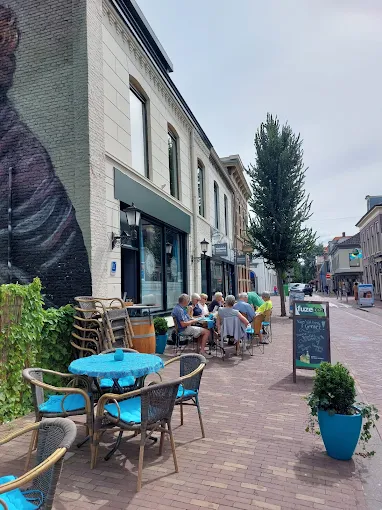
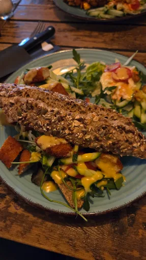
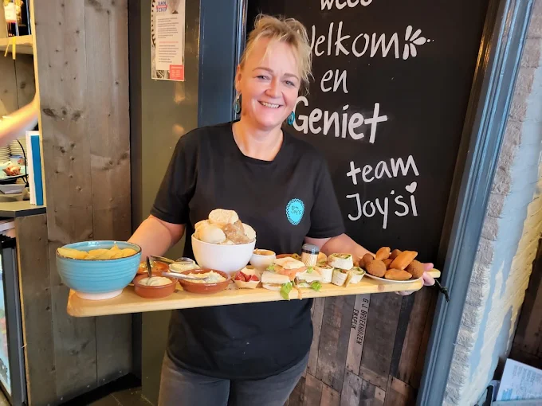
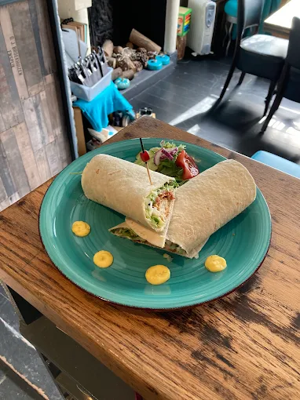
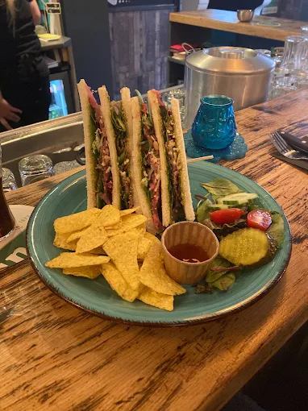
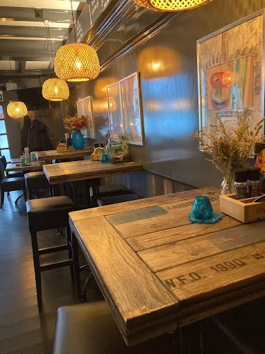

al sinds 2021 aan de Van Tolstraat
Welkom bij Joy'Si
Een gezellige bistro middenin Bodegraven, voor koffie, lunch, borrel, diner en high tea — geserveerd met een warme huiskamersfeer en, als het weer het toelaat, op het terras.
Ons verhaal
Joy'Si werd in 2021 geopend door Joyce de Lange, midden in het centrum van Bodegraven. Wat begon als een voorproefje aan de bar groeide al snel uit tot een vaste plek in het dorp — voor een kop koffie, een lunch, een borrel op het terras of een avondje diner.
Aan de muren hangen tekeningen die Joyce's vader in 1990 maakte: een persoonlijk tintje dat de zaak meteen die warme huiskamersfeer geeft waar gasten steeds voor terugkomen. Geen grote kaart vol overbodige extra's, maar eerlijke gerechten, gezelligheid en tijd voor een praatje.
- Sinds 2021
- Ligging centrum Bodegraven, Van Tolstraat
- Voor koffie · lunch · borrel · diner · high tea
Sfeerbeelden
Een paar kiekjes van binnen, buiten en van het bord.






Wat gasten zeggen
“Heerlijk broodje gezond en heel vriendelijke bediening — een fijne plek voor de lunch.”
“Gezellig op het terras gezeten met een drankje, de dames maken echt een praatje met je.”
“Klein maar fijn, met een warme sfeer. Komen zeker nog eens terug voor de high tea.”
Contact & route
- Adres
- Van Tolstraat 19
2411 BP Bodegraven - Telefoon
- 0172 - 793 412
- bistrojoysi@gmail.com
Openingstijden
| Maandag | Gesloten |
|---|---|
| Dinsdag | Gesloten |
| Woensdag | 11:00 – 23:00 |
| Donderdag | 16:00 – 23:00 |
| Vrijdag | 11:00 – 23:00 |
| Zaterdag | 11:00 – 23:00 |
| Zondag | Gesloten |